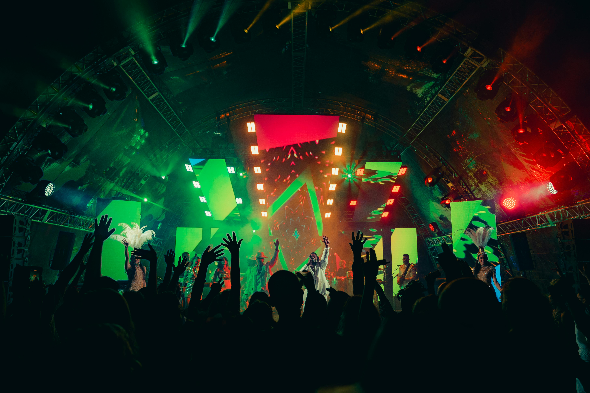

The Problem
Manual event coordination at the university was slow and error-prone. Students missed important events, organizers struggled with registration tracking, and there was no central system for communication or feedback.
The Solution
I led the design and development of a web-based event management platform that automates event creation, registration, and user management. The system streamlines the entire event lifecycle from announcement to feedback collection.
Key Features
- Event creation and scheduling with calendar integration
- User registration and role-based authentication
- Automated confirmation emails and reminders
- Real-time event capacity tracking
- Feedback and survey collection after events
- Admin dashboard for analytics and reporting
Tech Stack
What I Learned
Leading this project taught me valuable lessons in system architecture, database design, and project management. I learned how to coordinate with stakeholders, manage feature priorities, and deliver a working product that solves real user needs. This experience solidified my desire to combine technical skills with leadership.
Results
Reduced event coordination time by an estimated 40%. The system was successfully adopted by 3 university departments for trial use, with positive feedback from both organizers and attendees.